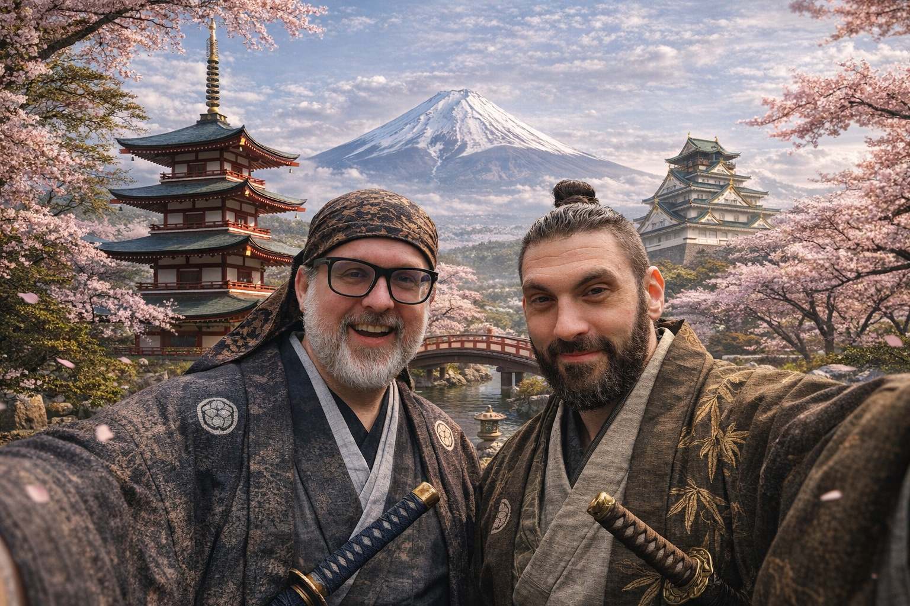

The Grand Expedition - CCBB Style!
JAPAN
2026
APRIL 28 — MAY 11 • 14 DAYS
Steve
Aaron
Meeting up with Mom & Grace in Kyoto & Tokyo (Days 8 & 11)
🔍
🇺🇸
USD
⇄
🇯🇵
JPY
Expand All
Must-Hit
On the List
Video Guides
▼
One-Bag Packing Checklist
▼
×
◀
Rokudan
Edo Period Koto
▶
♫
♫ Tap to play